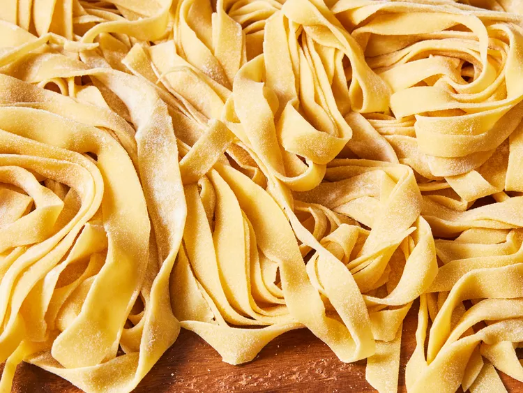

Pasta Recipe

Description
Quick and easy homemade pasta to use in your favorite dishes!
Ingredients
Here is a list of the ingredients you will need:
- 2 cups of flour
- 3 large eggs
- 2 tablespoons of olive oil
- 1 teaspoon of salt
- 2 tablespoons of water (as needed)
Steps
Once you've prepared all the ingredients, follow these steps:
- Mix flour, eggs, olive oil and salt in a bowl until they combine. Add water 1 teaspoon at a time to the mixture until it forms into a smooth, thick dough.
- Turn dough out onto a lightly floured work surface and knead for 10 minutes, then let it rest for 5 to 10 minutes.
- Divide the dough into 8 balls and use a pasta machine to roll and cut the dough into shape.
Return to homepage